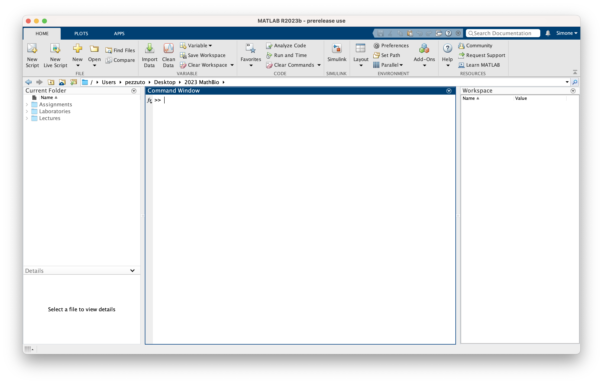
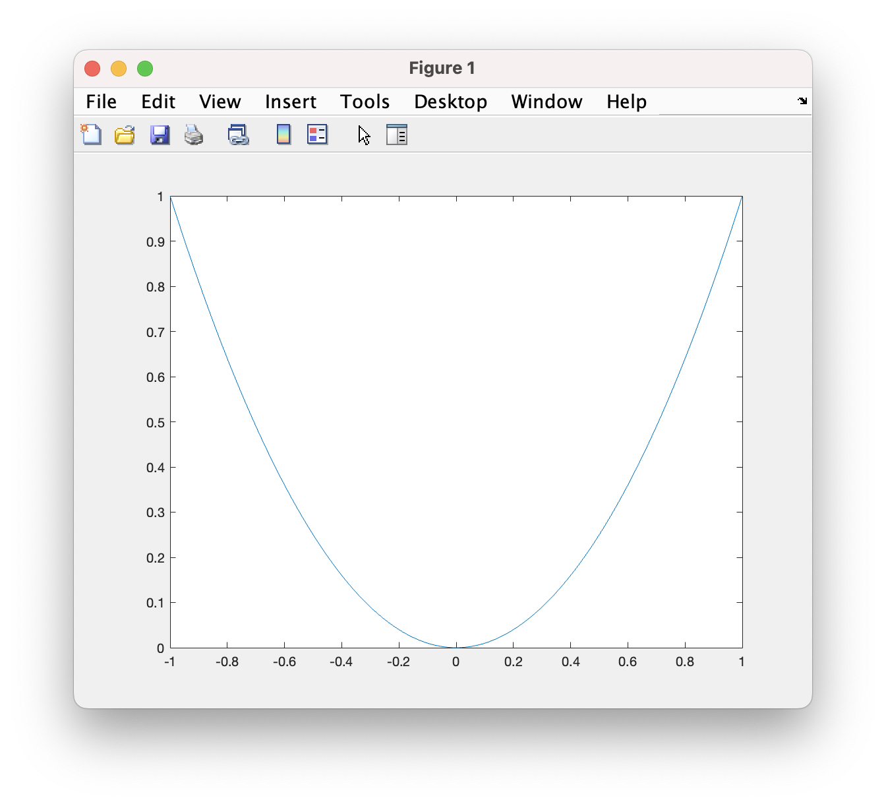
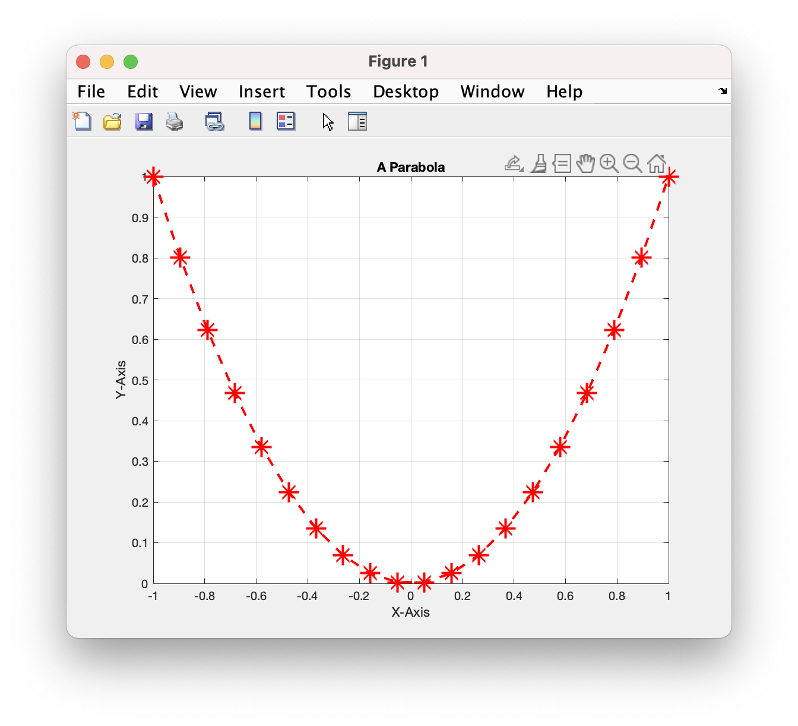
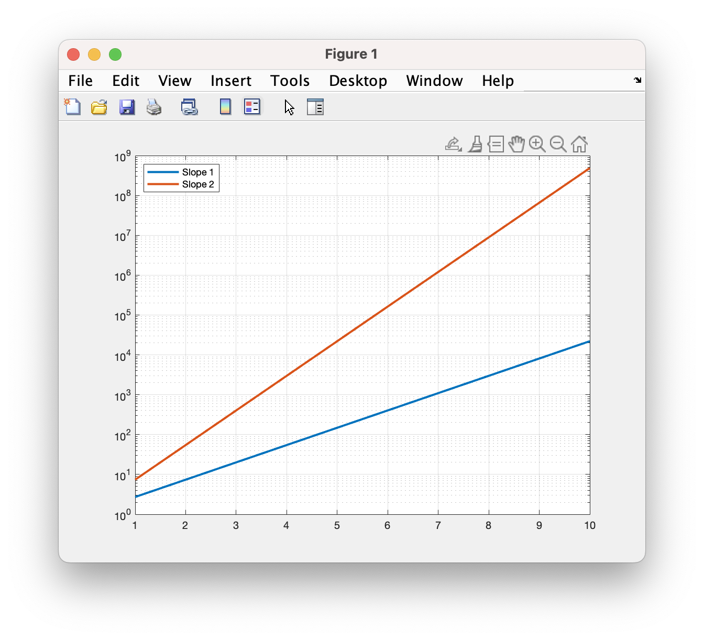
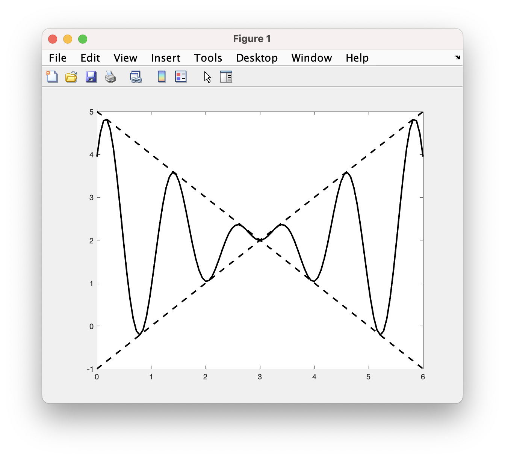
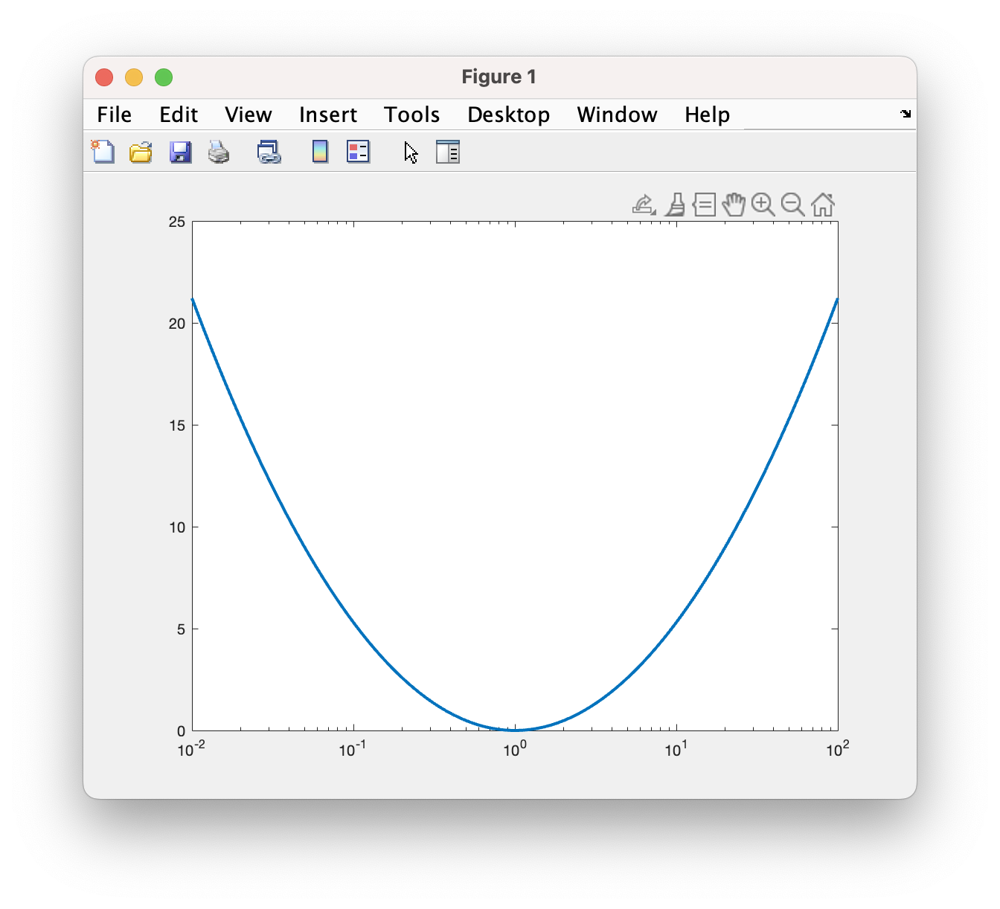
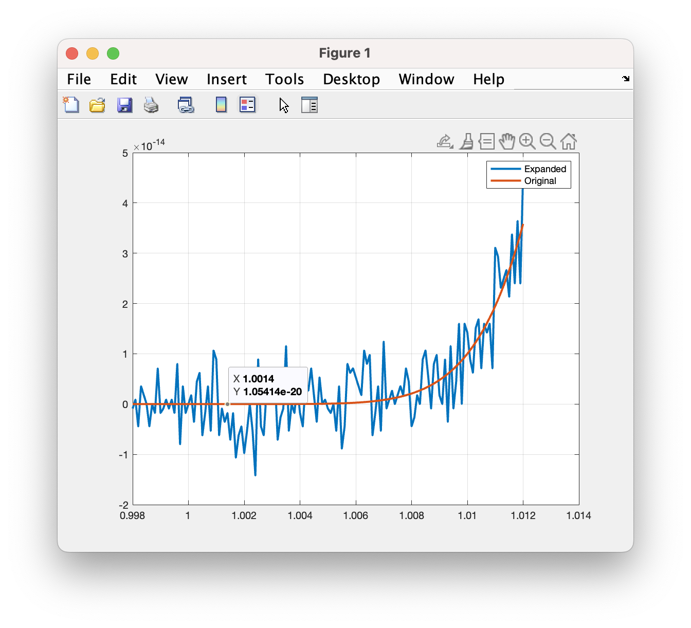

Appendix C — Introduction to MATLAB
C.1 Overview
MATLAB is a software for scientific computing. It is a self-contained environment, with thousands of optimized functions for many tasks. MATLAB is a proprietary software, so you need a license to use it. Most universities offer an educational license (see this website for UniTrento.)
There are free alternatives too:
- GNU Octave, an open-source software aiming at 1:1 compatibility with Matlab. You can use it, but beware that some MATLAB packages may not work (e.g., MatCont).
- Python, probably the most popular programming language, has many libraries for scientific computing, such as numpy, scipy, matplotlib, jax, and many others. It would be the best alternative to Matlab, if it weren’t for MatCont, that we will extensively use.
- Julia, it is a python competitor, with a similar syntax but much better performance. Many libraries have a Julia wrapper, but again not MatCont.
You are free to use any Matlab alternative, and rely on it only for MatCont.
C.2 Installation
Matlab installation is straightforward on most OSes. Please follow the instruction on the website. We do not need special toolboxes. In case, you can install them later.
You can also use the online version of MATLAB. It comes with an online storage called MATLAB Drive that you can use to sync your files.
C.3 Quick tour
Once open, Matlab will look like this:

You can notice different panels:
- Command Window is where we type commands.
- Current Folder is the current working directory.
- Workspace is a summary of all variables.
The system is waiting for an input >>.
C.3.1 Basics
MATLAB stands for MAtrix LABoratory, so its philosophy is to store everything numeric as a matrix. (This is not entirely true anymore, recent versions of Matlab introduced many new types.) A scalar is a \(1\times 1\) matrix. Matlab a weakly typed (and interpreted) programming language. A variable is a generic, and no type is needed like in C:
>> a = 2.45
a =
2.4500As we inout a = 2.45, the system responds with its representation. Note that this is not the internal precision! All numbers with a period are stored as double. To suppress the output, just put a semicolon:
>> a = 2.45;We can execute more commands per line (note the comma):
>> a = 2.45 , b = 3.1; A = 1.2;Matlab is case-sensitive: the variable a and A are different. This is the standard behavior also for file names in POSIX systems like UNIX, but not for Windows. Also on macOS you need to be careful: by default the file system is case-insensitive like Windows.
If a number is assigned to nothing, it will go to the variable ans:
>> 2.45;
>> whos
Name Size Bytes Class Attributes
ans 1x1 8 double
>> ans
ans =
2.4500Some variables are predefined, like pi, \(\pi\), and 1i or 1j, the imaginary unit \(i\). Note that also i and j are valid for Matlab, but dangerous: i is often an iteration variable in a for-loop:
>> a = 5 + 2*i
a =
5.0000 + 2.0000i
>> i = 2;
>> b = 5 + 2*i
b =
9
>> c = 5 + 2*1i
c =
5.0000 + 2.0000iYou can clear a variable by using clear myvar, or all variables with clear. The command clc clears the screen.
If you are not sure of a command, use tab-completion: type the beginning of a command, then type “TAB”. You can also use help and doc.
C.3.2 Output format
By default, numbers are visualized in short format. The command format can change the behavior:
>> format long
>> 1/7
ans =
0.142857142857143Below in the table different options:
| Format | ans |
|---|---|
format rat |
1/7 |
format short |
0.1429 |
format short e |
1.4286e-01 |
format short g |
0.14286 |
format long |
0.142857142857143 |
format long e |
1.428571428571428e-01 |
format long g |
0.142857142857143 |
C.3.3 Vector and matrices
We have many ways to generate a vector in Matlab. The most direct is:
>> b = [1 5 6 7];
>> c = [1, 5, 6, 7];The two vectors are identical: the comma is optional. The dimension is \(1\times 4\), that is 1 row and 4 columns. For column vector, we need to use the semi-colon (now mandatory):
>> d = [1; 5; 6; 7];
>> whos
Name Size Bytes Class Attributes
b 1x4 32 double
c 1x4 32 double
d 4x1 32 double Note that the memory requirement is 32 bytes, that it \(4\cdot 8\) bytes, where 8 bytes is a 64-bit floating-point number (double).
We can generate a vector also as follows:
<start> : <increment> : <end>If we omit the increment, it is assumed one:
>> 1:8
ans =
1 2 3 4 5 6 7 8
>> 1:2:8
ans =
1 3 5 7
>> 0.5:-0.1:0
ans =
0.5000 0.4000 0.3000 0.2000 0.1000 0The command above is quite powerful: it also compensates for rounding off errors. Alternatively, we can use linspace:
>> linspace(0,1,5)
ans =
0 0.2500 0.5000 0.7500 1.0000Matrices easily follows:
>> A = [ 1 2 3 4; 5 6 7 8 ; 9 10 11 12; 13 14 15 16 ]
A =
1 2 3 4
5 6 7 8
9 10 11 12
13 14 15 16which is returning a \(4\times 4\) matrix. More complex matrices can be created with ad-hoc functions like eye, ones, zeros, reshape, and so on.
>> reshape(A, 2, 8)
ans =
1 9 2 10 3 11 4 12
5 13 6 14 7 15 8 16
>> B = [ 1:3 0; 4:-1:1 ]
B =
1 2 3 0
4 3 2 1
>> eye(2,3)
ans =
1 0 0
0 1 0
>> ones(2,2)
ans =
1 1
1 1Try to create the following matrix:
>> n = 3;
>> A = [ones(n), zeros(n); ...
eye(n), [1:n; n*ones(n-1,n) ];C.3.4 Matrix manipulation
We can access and modify matrices quite naturally:
>> v = linspace(0, 1, 5);
>> v(2)
ans =
0.2500The operator ( ) is much more poweful: we can use slices:
>> v([1 3 5])
ans =
0 0.5000 1.0000
>> v(1:3)
ans =
0 0.2500 0.5000
>> v(2:end)
ans =
0.2500 0.5000 0.7500 1.0000
>> v([1 2; 3 2])
ans =
0 0.2500
0.5000 0.2500We also can use vectors or matrices of indices. For instance, if indices are [1 3 5], the output is [v(1) v(3) v(5)]. With matrices is similar:
>> A = [ 1 2 3 ; 4 5 6 ; 7 8 9]
A =
1 2 3
4 5 6
7 8 9
>> A(1,1)
ans =
1
>> A(1:3,1:2)
ans =
1 2
4 5
7 8
>> A(1:end-1,2:end)
ans =
2 3
5 6
>> A([1 2],[2 3])
ans =
2 3
5 6In the last case we extract the first and the second row, and then crossed with the second and third columns.
>> A(1:end)
ans =
1 4 7 2 5 8 3 6 9
>> A([2 3; 9 6])
ans =
4 7
9 8The operation A(1:end) is equivalent to A(:), except for returning a column vector instead of a row vector.
C.3.5 Operations on Matrices
Let’s now discuss algebraic operations on matrices. The basic rules are as follows, for two matrices \(\mathbf{A} \in \mathbb{C}^{n\times n}\) and \(\mathbf{B}\in\mathbb{C}^{p\times q}\):
- Addition is defined if and only if \(n = p\) and \(m = q\), and \(\mathbf{A}+\mathbf{B} \in \mathbb{C}^{n \times m}\).
- Multiplication is defined if and only if \(m = p\), and \(\mathbf{A}\mathbf{B} \in \mathbb{C}^{n \times q}\).
- Transpose \(\mathbf{A}^T \in \mathbb{C}^{m \times n}\), with \((\mathbf{A}^T)_{ij} = (\mathbf{A})_{ji}\).
- Conjugate transpose \(\mathbf{A}^H \in \mathbb{C}^{m \times n}\), with \((\mathbf{A}^H)_{ij} = \overline{(\mathbf{A})_{ji}}\).
The last two operations can be performed as follows:
>> A = [ 1+1i, 3; 1, 1-2i ];
>> A.'
ans =
1.0000 + 1.0000i 1.0000
3.0000 1.0000 - 2.0000i
>> A'
ans =
1.0000 - 1.0000i 1.0000
3.0000 1.0000 + 2.0000iIf the matrix is real, these two operations are the same. In fact, it is common to use ' as the transpose of a matrix:
>> a = [ 1 2 5 ];
>> b = [ 4 6 4 ];
>> H = [ 1 2 3 ; 2 4 7 ; 1 4 3 ];
>> G = [ 4 6 2 ; 8 4 1 ; 3 2 9 ];
>> a + b
ans =
5 8 9
>> a - b
ans =
-3 -4 1
>> H + G
ans =
5 8 5
10 8 8
4 6 12
>> H * G
ans =
29 20 31
61 42 71
45 28 33
>> G * a
Error using *
Inner matrix dimensions must agree.This is the most common error. In this case, the vector a is \(1 \times 3\), while H is \(3 \times 3\), which is not valid.
>> G * a'
ans =
26
21
52
>> a * G
ans =
35 24 49
>> 2 * a
ans =
2 4 10
>> a' * b
ans =
4 6 4
8 12 8
20 30 20
>> a * b'
ans =
36
>> A^2
ans =
8 22 26
17 48 55
12 30 40
>> a^2
Error using ^
Inputs must be a scalar and a square matrix.
To compute elementwise POWER, use POWER (.^) instead.The last message tells us that exponentiation is intended as matrix multiplication and is only defined for square matrices. It suggests using the dot version instead. In fact, scalar binary operations like multiplication, division, and exponentiation become element-wise operations for vectors and matrices when you put a dot in front of the operation symbol:
>> a .* b
ans =
4 12 20
>> a ./ b
ans =
0.2500 0.3333 1.2500
>> a .^ 2
ans =
1 4 25
>> a .^ b
ans =
1 64 625The only thing to keep in mind is that the two operands should have the same dimensions, or at least one of them should be a scalar (in which case it is repeated).
Try to create the following vector, for arbitrary \(n\): \[ \Bigl[\: \overbrace{ \underbrace{1, 1, \ldots, 1}_n, \underbrace{2, 2, \ldots, 2}_n, \ldots, \underbrace{n, n, \ldots, n}_n}^n \:\Bigr]. \]
>> n = 5;
>> v = reshape(ones(n,1)*(1:n),1,[])C.3.6 Elementary Mathematical Functions
One of the strengths of MATLAB is the vast number of mathematical functions (both elementary and advanced) it offers. Unless specified otherwise, almost all of these functions operate element-wise. For example, given a matrix A, exp(A) is not the matrix exponential (which is calculated with expm(A)), but rather a matrix whose elements are the exponentials of the original elements. Here are some elementary mathematical functions:
abs(A): Absolute value of the elements ofAsqrt(A): Square root of the elements ofAexp(A): Exponential function applied to the elements ofAlog(A): Natural logarithm of the elements ofAlog10(A): Base 10 logarithm of the elements ofAlog2(A): Base 2 logarithm of the elements ofAsin(A): Sine of the elements ofAcos(A): Cosine of the elements ofAtan(A): Tangent of the elements ofAasin(A): Arcsine of the elements ofA(in radians)acos(A): Arccosine of the elements ofA(in radians)atan(A): Arctangent of the elements ofA(in radians)sinh(A): Hyperbolic sine of the elements ofAcosh(A): Hyperbolic cosine of the elements ofAtanh(A): Hyperbolic tangent of the elements ofA
Compute \(\dfrac{e^5 + \sin(\pi)}{\sqrt{\log_2 30}-10}\) and \(e^{\log_{10}50} + e^{\log 30} + e^{\log_2 40}\).
Define \(\mathbf{x} = [1, 3, 4]\) and \(\mathbf{y} = [1, 1, 2]\). Compute \(2x_i \log_2(|y_i|+1) - y_i\log_{10}(x_i+2)\) and \(\arctan\left( \dfrac{x_i}{y_i}\right) - \sin^2\left( x_i\sqrt[3]{|y_i|^2} \right)\).
>> % Point 1
>> (exp(5) + sin(pi))/(sqrt(log2(30))-10)
>> exp(log10(50)) + exp(log(30)) + exp(log2(40))
>> % Point 2
>> x = [ 1 3 4 ];
>> y = [ 1 1 2 ];
>> 2*x.*log2(abs(y)+1) - y.*log10(x+2)
>> atan(x./y) - sin(x.*abs(y).^(2/3)).^2C.3.7 Elementary Mathematical Functions (Continued)
Let A, B be two matrices, and b be a vector.
size(A): Returns a two-element vector, where the first element is the number of rows inA, and the second element is the number of columns.size(A, 1): Returns the first element ofsize(A), which is the number of rows.size(A, 2): Returns the second element ofsize(A), which is the number of columns.length(b): Returns the number of elements in the vectorb.max(b): Returns the largest element in the vectorb.min(b): Returns the smallest element in the vectorb.max(A): Returns a row vector containing the maximum element of each column ofA.min(A): Returns a row vector containing the minimum element of each column ofA.max(A, B): Returns a matrix of the same dimensions asAandB, containing the element-wise maximum.min(A, B): Returns a matrix of the same dimensions asAandB, containing the element-wise minimum.max(A, [], 2): Returns a column vector containing the maximum element of each row ofA. If you replace 2 with 1, you getmax(A).min(A, [], 2): Returns a column vector containing the minimum element of each row ofA. If you replace 2 with 1, you getmin(A).sum(b): Returns a scalar equal to the sum of the elements in the vectorb.sum(A): Returns a row vector whose elements are the column-wise sum of the elements in matrixA.sum(A, 2): Returns a column vector whose elements are the row-wise sum of the elements in matrixA.diag(A): Returns the vector of the diagonal elements of matrixA.diag(A, k): Returns the vector of the \(k\)-th super-diagonal of matrixA.diag(A, -k): Returns the vector of the \(k\)-th sub-diagonal of matrixA.diag(b): Returns a matrix with the elements of vectorbon its diagonal.diag(b, k): Returns a matrix with the elements of vectorbon its \(k\)-th super-diagonal.diag(b, -k): Returns a matrix with the elements of vectorbon its \(k\)-th sub-diagonal.tril(A): Returns the lower triangular part of matrixA, making all elements strictly above the diagonal zero (even in a rectangular matrix).triu(A): Returns the upper triangular part of matrixA, making all elements strictly below the diagonal zero (even in a rectangular matrix).
There are many other important functions such as det (determinant of a square matrix), trace (trace of a matrix), norm (for calculating norms), and so on. We will introduce these functions as needed.
Try to use the function magic(n). Then sum by row, column, diagonal, etc. What do you observe?
>> n = 4;
>> A = magic(n);
>> sum(A, 2)
>> sum(A, 1)
>> sum(diag(A))We notice that the sum is always \(34\), at least for \(n=4\). In general, the magic square contains numbers from \(1\) to \(n^2\), and the magic number is \(\frac{1}{2}n(n^2+1)\). This is true even if we sum over the antidiagonal
>> sum(diag(fliplr(A)))The function fliplr (flip left–right) inverts the right with the left in a given matrix.
C.3.8 Functions and Scripts
Many of the commands we have introduced are defined as functions, which are procedures that take input data and provide output. In MATLAB, there are several ways to define a function.
Suppose we want to create a function fun(x) that returns the value of \(f(x) = x\sin(x) + \cos^2(x)\) for a given \(x\). The “legacy” method involves defining a string corresponding to the function and then evaluating it using the eval command:
>> fun = 'x*sin(x) + (cos(x))^2';
>> x = 1.0;
>> eval(fun)
ans =
1.1334However, there is an issue when x is a vector:
>> x = [ 1 2 3 ];
>> eval(fun)
Error using *
Inner matrix dimensions must agree.To handle vector input correctly, we need to “vectorize” the expression by using element-wise operations:
>> fun = 'x.*sin(x) + cos(x).^2';
>> x = [ 1 2 3 ];
>> eval(fun)
ans =
1.1334 1.9918 1.4034Alternatively, you can use the vectorize command to transform the function into its vectorized version.
However, a more convenient way is to define functions using “anonymous functions”:
>> fun = @(x) x.*sin(x) + cos(x).^2;
>> x = [ 1 2 3 ];
>> fun(x)
ans =
1.1334 1.9918 1.4034The @ symbol is called a “function handle.” Note that the vectorize command does not work with anonymous functions.
There are at least two other methods for defining functions, such as using inline and the Symbolic Math Toolbox. We won’t delve into these methods here.
Instead, let’s explore using scripts to define functions. An “script” is a text file with a .m extension containing a list of commands that MATLAB will execute when the file is called. You can edit the script using any text editor or with MATLAB’s built-in editor by running the following command:
>> editSuppose, for example, that the file myscript.m contains the following:
clear; clc;
% This is a comment:
% sum of squares of the diagonal
% of the magic matrix
n = 4;
A = magic(n);
summa = sum(diag(A).^2)If the file is in the working directory, you can run it as follows:
>> myscript
summa =
414The script is executed as if you had entered the commands directly in the terminal.
You can also have scripts that contain only a function with the following syntax:
function y = myfun(x)
y = x.*sin(x) + (cos(x)).^2;
endIn this case, you must save the file with the same name as the function (e.g., myfun.m).
Now you can use the function:
>> x = [ 1 2 3 ];
>> myfun(x)
ans =
1.1334 1.9918 1.4034Function scripts can have multiple arguments and return multiple outputs:
function [A, b] = vecmat(n, m)
% Generate a matrix A of size m x n and
% a vector b of size n x 1 with random values.
A = rand(n, m);
b = rand(n, 1);
endYou can call this function as follows:
>> [K, f] = vecmat(2, 3)
K =
0.4387 0.7655 0.1869
0.3816 0.7952 0.4898
f =
0.4456
0.6463Script functions can contain at most one function. It is also a good practice to use lowercase names without spaces. You can use functions with multiple arguments and return values as needed.
There are many other advanced features and techniques for creating and using functions in MATLAB, but these are the basics to get you started.
C.3.9 Loops and Control Structures
MATLAB is a full-fledged interpreted programming language, and it provides many control flow operations.
>> for i = 1:3, magic(i), end;
ans =
1
ans =
1 3
4 2
ans =
8 1 6
3 5 7
4 9 2In the example above, a for loop iterates from 1 to 3, and for each iteration, the magic function is called.
>> n = 1; while n < 4, magic(n), n = n + 1; end;
ans =
1
ans =
1 3
4 2
ans =
8 1 6
3 5 7
4 9 2In this example, a while loop is used. It continues to execute as long as the condition n < 4 is true. Inside the loop, the magic function is called, and n is incremented.
>> if rand(1) > 0.5, disp('Greater than 0.5'); else, disp('Less than 0.5'); end;
Greater than 0.5The if statement is used to perform conditional execution. In this example, it checks if a random number is greater than 0.5 and displays a message accordingly.
As we need more details, we will add them gradually. Typically, writing these control structures directly in the command line can be cumbersome and less readable. It’s preferable to write everything in a script with proper indentation and execute the script as needed.
- Write a function named
cubediagthat takes a matrixAas input and returns the sum of the cubes of the diagonal elements. - Write another function named
cubeantidiagthat returns the sum of the cubes of the anti-diagonal elements (the diagonal that is symmetric to the main diagonal).
You can define these functions in separate script files or directly in the MATLAB environment.
function s = cubediag(A)
s = sum(diag(A).^2);
end
function s = cubeantidiag(A)
% we could also use fliplr
Aflip = A(:,end:-1:1);
s = cubediag(Aflip);
end
function s = cubeantidiag(A)
% case of square matrices
n = size(A,1);
s = sum(A(end−n+1:1−n:n));
endC.3.10 Plots
To create a plot of a real-valued function of a real variable in MATLAB, you can use the plot command. In its basic form, you provide two vectors, x and y, of the same size that represent the data points.
>> x = linspace(-1, 1, 100);
>> parab = @(x) x.^2;
>> plot(x, parab(x));
You can customize the style, size, and color of the line using various options typically provided after the data points:
>> x = linspace(-1, 1, 20);
>> plot(x, parab(x), 'r*--', 'LineWidth', 2.0, 'MarkerSize', 15.0);
>> grid on;
>> xlabel('X-Axis');
>> ylabel('Y-Axis');
>> title('A Parabola', 'FontWeight', 'bold');
To see the possible combinations of line styles and markers, you can type help plot or doc plot. However, the most commonly used is the third argument, which is a string like r*--, which translates to:
r: Red line*: Asterisk-shaped markers--: Dashed line
The order of styles is fixed, but each of them is optional. For example, by simply typing y, you will get a yellow line.
To overlay multiple plots, you can follow several approaches:
Direct Overlay:
>> x = linspace(-1, 1, 20); >> parab = @(x) x.^2; >> cubic = @(x) x.^3; >> plot(x, parab(x), x, cubic(x));Creating a Data Matrix:
>> plot(x, [parab(x); cubic(x)]);Using the
holdCommand:>> plot(x, parab(x)); >> hold all; >> plot(x, cubic(x)); >> hold off;
You can also add a legend to distinguish the plots:
>> legend('Parabola', 'Cubic');You can add multiple plots to the same graph by using the hold command:
>> plot(x, parab(x));
>> hold on;
>> plot(x, cubic(x));
>> hold off;You can add a legend to differentiate between the plots:
>> legend('Parabola', 'Cubic');Another important type of plot, especially when evaluating the behavior of errors concerning parameters, is the use of logarithmic or semilogarithmic scales. For a given function \(f(x)\) with the graph \(y = f(x)\):
semilogxrepresents the points after changing the variable \(x \mapsto \log x\).semilogyrepresents the points after changing the variable \(y \mapsto \log y\).loglogperforms both of the above changes.
For example, the graph \(y = e^{\alpha x}\), in a \(y\)-logarithmic scale, becomes \(\tilde{y} := \log y = \alpha x\), which is a straight line.
>> x = linspace(1, 10, 100);
>> semilogy(x, exp(x), x, exp(2*x), 'LineWidth', 2.0);
>> grid on;
>> legend('Slope 1', 'Slope 2', 'Location', 'NorthWest');
Plot the graph of the function \(f(x) = 2 + (x-3)\sin(5(x-3))\) for \(0 \leq x \leq 6\). Overlay dashed lines that bound this function.
Consider the function \(f(x) = (\log x)^2\) for \(0.1 \leq x \leq 10\). What do you expect from the graph in logarithmic scaling? Plot and verify.
>> x = linspace(0, 6, 100);
>> f = 2 + (x-3).*sin(5*(x-3));
>> r = [ 2 + (x-3); 2 - (x-3) ];
>> plot(x, f, 'k-', x, r, 'k--', 'LineWidth', 2.0);
Given \(\hat{x} = \log x\) and \(\hat{y}=\log y\), the plot in \(x\)-log scale is \(y = (\log 2)^2 = \hat{x}^2\). We expect a parabola.
>> x = 10.^linspace(-2,2,100);
>> y = log(x).^2;
>> semilogx(x, y, 'LineWidth', 2.0);
C.4 Approximation error
When working with approximations, it’s essential to measure the accuracy of an approximation \(\hat{x}\) to a number \(x \in \mathbb{R}\). Two common metrics are:
- Absolute Error: \(E_{\text{abs}}(\hat{x}) = |x - \hat{x}|\)
- Relative Error: \(E_{\text{rel}}(\hat{x}) = \frac{|x - \hat{x}|}{|x|}\) for \(x \neq 0\)
Significant figures are a way to represent the accuracy of an approximation. Given an approximation \(\hat{x}\) to \(x\), it has \(p\) significant figures if:
\[ E_{\text{abs}}(\hat{x}) \leq \frac{1}{2} \times 10^{s-p+1} \]
Where \(s\) is the largest integer such that \(|x| \geq 10^s\).
When \(x\) is not known (common in many practical applications), significant figures can be determined by considering successive approximations. For a sequence \(\{x_i\}_{i=0}^\infty\) that converges to \(x\), you can calculate the absolute error at each step \(|x_i - x_{i-1}|\).
Complete the following table (use format short for relative error):
| \(x\) | \(\hat{x}\) | Relative Error | Absolute Error | Significant Figures |
|---|---|---|---|---|
| 1.6925 | 1.69285 | – | – | – |
| 23.130 | 23.129 | – | – | – |
| 23.130 | 23.1299 | – | – | – |
| 23.130 | 23.129999 | – | – | – |
| 0.00345 | 0.00343 | – | – | – |
| 0.01008 | 0.01012 | – | – | – |
| 0.01008 | 0.01002 | – | – | – |
| 0.01008 | 0.0102 | – | – | – |
| \(x\) | \(\hat{x}\) | Relative Error | Absolute Error | Significant Figures |
|---|---|---|---|---|
| 1.6925 | 1.69285 | \(0.21\cdot 10^{-3}\) | \(0.4\cdot 10^{-3}\) | 4 |
| 23.130 | 23.129 | \(0.43\cdot 10^{-4}\) | \(0.1\cdot 10^{-2}\) | 4 |
| 23.130 | 23.1299 | \(0.43\cdot 10^{-5}\) | \(0.1\cdot 10^{-3}\) | 5 |
| 23.130 | 23.129999 | \(0.43\cdot 10^{-7}\) | \(0.1\cdot 10^{-5}\) | 7 |
| 0.00345 | 0.00343 | \(0.58\cdot 10^{-2}\) | \(0.1\cdot 10^{-4}\) | 2 |
| 0.01008 | 0.01012 | \(0.40\cdot 10^{-2}\) | \(0.4\cdot 10^{-4}\) | 3 |
| 0.01008 | 0.01002 | \(0.60\cdot 10^{-2}\) | \(0.6\cdot 10^{-4}\) | 2 |
| 0.01008 | 0.0102 | \(0.12\cdot 10^{-1}\) | \(0.1\cdot 10^{-3}\) | 1 |
C.4.1 Floating-Point Arithmetic
Natural numbers (\(\mathbb{N}\)), although infinite, can be represented exactly on a computer within a predefined range of values. For example, a 32-bit integer can represent numbers from 0 to \(2^{32}-1\). Similarly, it can represent signed integers (\(\mathbb{Z}\)) from \(-2^{31}\) to \(2^{31}-1\).
Real numbers (\(\mathbb{R}\)), on the other hand, are too numerous to be represented exactly within any chosen range. There are at least two possibilities: the first involves fixing the number of digits after the decimal point (fixed-point). The second considers the proper subset \(\mathbb{F} \subset \mathbb{R}\) of floating-point numbers:
\[y = \pm m \times \beta^{e-t},\]
where \(\beta\) is the base, \(t\) is the precision, and \(e \in [e_{\text{min}}, e_{\text{max}}]\) is the exponent. For example, with \(\beta=2\), \(t=3\), \(e_{\text{min}}=-1\), and \(e_{\text{max}}=3\), you can represent numbers like:
\[ \begin{split} 0&, 0.25, 0.3125, 0.3750, 0.4375, 0.5, 0.625, 0.750, 0.875, \\ 1.0&, 1.25, 1.50, 1.75, 2.0, 2.5, 3.0, 4.0, 5.0, 6.0, 7.0. \end{split} \]
The following graph illustrates the spacing of these numbers:
The IEEE-754 standard sets values for these parameters in two significant cases: single precision (float in C), where \(\beta=2\), \(t=24\), \(e_{\text{min}}=-125\), and \(e_{\text{max}}=128\), and double precision (double in C), where \(\beta=2\), \(t=53\), \(e_{\text{min}}=-1021\), and \(e_{\text{max}}=1024\).
Machine epsilon (\(\varepsilon_{\text{M}}\)) is the smallest positive number such that \(1 + \varepsilon_{\text{M}} \neq 1\) in the floating-point system. It represents the distance between 1 and the next representable number in the system. For single precision, \(\varepsilon_{\text{M}}\) is approximately \(1.19 \times 10^{-7}\), while for double precision, it’s approximately \(2.22 \times 10^{-16}\).
In MATLAB, you can check these values using the eps function:
>> eps
ans =
2.2204e-16 The limits of representable numbers can also be checked with realmin and realmax:
>> realmax
ans =
1.7977e+308
>> realmin
ans =
2.2251e-308As observed from the previous graph, the spacing between numbers in \(\mathbb{F}\) is not constant. MATLAB’s eps command allows you to determine these spacings:
>> eps(1)
ans =
2.2204e-16
>> eps(10)
ans =
1.7764e-15
>> eps(100)
ans =
1.4211e-14
>> eps(1000)
ans =
1.1369e-13The set \(\mathbb{F}\) also includes some exceptional cases:
>> 1e400
ans =
Inf
>> 1e-400
ans =
0
>> 1/0
ans =
Inf
>> 0/0
ans =
NaNThe number
Infrepresents infinity, meaning it’s beyondrealmax. It’s not considered an error, and arithmetic operations involving infinity are still valid, although they can often lead to undesirable results.When dealing with numbers smaller than
realmin, they are approximated to 0.The situation
NaN(Not-a-Number) indicates that the result is undefined or has no meaningful value.
Floating-point arithmetic has its limitations, including a lack of associativity for some operations, which can lead to significant errors in some cases. For example, when subtracting two nearly equal numbers, you can experience loss of precision due to the finite precision of the representation:
>> x = 1.0e-15;
>> (1+x)-1
ans =
1.1102e-15
>> (1-1)+x
ans =
1.0000e-15This issue is known as cancellation error and should be avoided whenever possible in numerical computations. The problem is indeed quite serious, and it’s a common issue in numerical computations, especially when dealing with small numbers. For example, you have two functions:
\[f(x) = \frac{1-\cos x}{x^2}, \quad g(x) = \frac{1}{2}\left(\frac{\sin(x/2)}{x/2}\right)^2.\]
Both of these functions are identical. However, when you evaluate them for \(x = 1.2 \times 10^{-8}\) in MATLAB, you get different results:
>> x = 1.2e-8;
>> (1 - cos(x)) / x^2;
ans =
0.7710
>> 0.5 * (sin(x / 2) / (x / 2))^2;
ans =
0.5000The first result is clearly incorrect, and it violates the bounds of the function, which should be between 0 and 0.5. This is a classic example of the problem of numerical precision and the limitations of finite-precision arithmetic. Small values of x lead to significant errors due to rounding and truncation.
To address such issues, numerical analysts often use techniques like Taylor series expansions, higher precision arithmetic, or specialized algorithms to improve the accuracy of computations involving small numbers.
It is good practice to avoid cases like these as much as possible, as they are quite common. For example:
\[ \begin{aligned} f(x) &= \frac{e^x-1}{x}, &&\text{for $x \approx 1$,} \\ x_{1,2} &= \frac{-b\pm\sqrt{b^2-4ac}}{2a}, &&\text{for $b^2 \approx 4ac$ and $b \approx \sqrt{b^2-4ac}$,} \\ s_n^2 &= \frac{1}{n-1}\left( \sum\nolimits_{i=1}^n x_i^2 - \frac{1}{n}\left(\sum\nolimits_{i=1}^n x_i \right)^2 \right) && \end{aligned} \]
In the last case, when calculating variance, it is even possible to obtain negative results, which have no mathematical sense.
The strategy used by Archimedes to approximate \(\pi\) involves considering regular polygons inscribed and circumscribed within the unit circle. In fact, if \(n\) is the number of sides, the perimeter \(P_n\) approaches \(2\pi\) as \(n \to \infty\).
Starting with a hexagon and successively doubling the number of sides, it can be found that as \(i \to \infty\), \(6 \cdot 2^i \cdot t_i\) approaches \(\pi\), where \(t_i\) satisfies the following relation:
\[ t_0 = \frac{1}{\sqrt{3}}, \qquad t_{i+1} = \frac{\sqrt{t_i^2+1}-1}{t_i}. \]
Here are the tasks related to this approximation:
Implement this algorithm in MATLAB and compare the approximation with \(\pi\) provided by the
piconstant. What do you observe?Replace the recursive formula with its equivalent:
\[ t_0 = \frac{1}{\sqrt{3}}, \qquad t_{i+1} = \frac{t_i}{\sqrt{t_i^2+1}+1}. \]
Comment on any differences observed.
Note: Use format long to display the differences.
The value given by Matlab for \(\pi\) is:
>> format long
>> pi
ans =
3.141592653589793We compute now \(\pi\) with method 1. pia and method 2. pib:
>> format long;
>> n = 30;
>> ta = 1/sqrt(3);
>> tb = 1/sqrt(3);
>> for i = 1:n
% first method
ta = (sqrt(ta^2+1)-1)/ta;
pia = 6*2^i*ta;
% second method
tb = tb/(sqrt(tb^2+1)+1);
pib = 6*2^i*tb;
>> end
>> fprintf('Method 1, pi = %f, err = %e\n', pia, abs(pia-pi));
>> fprintf('Method 2, pi = %f, err = %e\n', pib, abs(pib-pi));We see that the first method suffers of cancellation errors.
Consider the polynomial \(p(x) = (x-1)^7\) for \(x \in [0.998, 1.012]\). Expand the polynomial using the binomial formula and compare it to the original unexpanded polynomial. Comment on any differences.
Expanding we have \[ p(x) = x^7 - 7x^6 + 21x^5 - 35x^4 + 35x^3 - 21x^2 + 7x - 1. \]
Now we compare
>> x = 0.998:0.0001:1.012;
>> plot(x, x.^7-7*x.^6+21*x.^5-35*x.^4+35*x.^3-21*x.^2+7*x-1, ...
x, (x-1).^7, 'LineWidth', 2.0);
>> grid on;
>> legend('Expanded', 'Original');